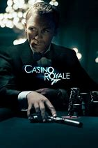
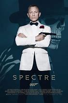

|  |
1.
Casino Royale
(2006)
2hr 24min | Thriller, Action, Adventure
 8/10
 80
Official Trailer
|
James Bond (Daniel Craig) goes on his first mission as a 00. Le Chiffre (Mads Mikkelsen) is a banker to the world's terrorists. He is participating in a poker game at Montenegro, where he must win back his money, in order to stay safe amongst the terrorist market. The boss of MI6, known simply as "M" (Dame Judi Dench) sends Bond, along with Vesper Lynd Eva Green) to attend this game and prevent Le Chiffre from winning. Bond, using help from Felix Leiter (Jeffrey Wright), Rene Mathis (Giancarlo Giannini), and having Vesper pose as his partner, enters the most important poker game in his already dangerous career. But if Bond defeats Le Chiffre, will he and Vesper Lynd remain safe? |
Daniel Craig
Judi Dench
Eva Green
Mads Mikkelsen
|
Martin Campbell
|
|
2.
Quantum of Solace
(2008)
1hr 46min | Action, Thriller, Adventure
6.6/10
58
Official Trailer
|
Is there solace in revenge? James Bond (Daniel Craig) and M (Dame Judi Dench) sniff a shadowy international network of power and corruption reaping billions. As Bond pursues the agents of an assassination attempt on M, all roads lead to Dominic Greene (Mathieu Amalric), a world-renowned developer of green technology. Greene, a nasty piece of work, is intent on securing a barren area of Bolivia in exchange for assisting a strongman stage a coup there. The C.I.A. looks the other way, and only Bond, with help from a retired spy and from a mysterious beauty, stands in Greene's way. M wonders if she can trust Bond, or if vengeance possesses him. Beyond that, can anyone drawn to Bond live to tell the tale? |
Daniel Craig
Judi Dench
Olga Kurylenko
Mathieu Amalric
|
Marc Forster
|
|
3.
Skyfall
(2012)
2hr 23min | Thriller, Action, Adventure
7.7/10
81
Official Trailer
|
When James Bond's (Daniel Craig's) latest assignment goes gravely wrong and Agents around the world are exposed, MI6 is attacked, forcing (M Dame Judi Dench) to relocate the agency. These events cause her authority and position to be challenged by Gareth Mallory (Ralph Fiennes), the new Chairman of the Intelligence and Security Committee. With MI6 now compromised from both inside and out, M is left with one ally she can trust: Bond. 007 takes to the shadows, aided only by field agent, Miss Eve Moneypenny (Naomie Harris), following a trail to the mysterious Tiago Rodriguez, a.k.a. Raoul Silva (Javier Bardem), whose lethal and hidden motives have yet to reveal themselves. |
Daniel Craig
Judi Dench
Javier Bardem
Bérénice Marlohe
|
Sam Mendes
|
|  |
4.
Spectre
(2015)
2hr 28min | Action, Thriller, Adventure
6.8/10
60
Official Trailer
|
A cryptic message from the past sends James Bond (Daniel Craig) on a rogue mission to Mexico City and eventually Rome, where he meets Lucia Sciarra (Monica Belluci), the beautiful and forbidden widow of an infamous criminal. Bond infiltrates a secret meeting and uncovers the existence of the sinister organisation known as S.P.E.C.T.R.E. Meanwhile, back in London, Max Denbigh (Andrew Scott), the new head of the Centre of National Security, questions Bond's actions and challenges the relevance of MI6, led by M (Ralph Fiennes). Bond covertly enlists Miss Eve Moneypenny (Naomie Harris) and Q (Ben Whishaw) to help him seek out Dr. Madeleine Swann (Léa Seydoux), the daughter of his old nemesis Mr. White (Jesper Christensen), who may hold the clue to untangling the web of S.P.E.C.T.R.E. As the daughter of the assassin, she understands Bond in a way most others cannot. As Bond ventures towards the heart of S.P.E.C.T.R.E., he learns a chilling connection between him and the enemy he seeks. |
Daniel Craig
Ben Whishaw
Léa Seydoux
Dave Bautista
Christoph Waltz
|